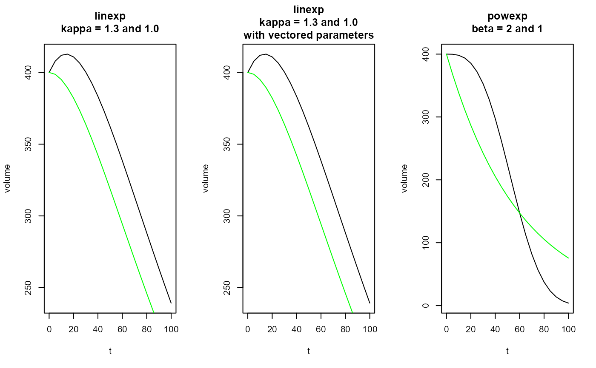

The linexp and the power exponential (powexp) functions can
be used to fit gastric emptying curves.
linexp(t, v0 = 1, tempt = NULL, kappa = NULL, pars = NULL) linexp_slope(t, v0 = 1, tempt = NULL, kappa = NULL, pars = NULL) linexp_auc(v0 = 1, tempt = NULL, kappa = NULL, pars = NULL) powexp(t, v0 = 1, tempt = NULL, beta = NULL, pars = NULL) powexp_slope(t, v0 = 1, tempt = NULL, beta = NULL, pars = NULL) linexp_log(t, v0 = 1, logtempt = NULL, logkappa = NULL, pars = NULL) powexp_log(t, v0 = 1, logtempt = NULL, logbeta = NULL, pars = NULL)
| t | Time after meal or start of scan, in minutes; can be a vector. |
|---|---|
| v0 | Initial volume at t=0. |
| tempt | Emptying time constant in minutes (scalar). |
| kappa | Overshoot term for linexp function (scalar). |
| pars | Default NULL. If not NULL, the other parameters with exception
of |
| beta | Power term for power exponential function (scalar). |
| logtempt | Logarithm of emptying time constant in minutes (scalar). |
| logkappa | Logarithm of overshoot term for linexp function (scalar). |
| logbeta | Logarithm of power term for power exponential function (scalar). |
Vector of length(t) for computed volume.
The linexp function can have an initial overshoot
to model secretion.
vol(t) = v0 * (1 + kappa * t / tempt) * exp(-t / tempt)
The powexp function introduced by Elashof et al. is
montonously decreasing but has more freedom to model details in the
function tail.
vol(t) = v0 * exp(-(t / tempt) ^ beta)
The _slope functions return the first derivatives of linexp
and powexp.
Use the _log functions to enforce positive parameters
tempt and beta. Rarely required for gastric emptying curves.
t = seq(0,100, by=5) kappa = 1.3 tempt = 60 v0 = 400 beta = 3 pars = c(v0 = v0, tempt = tempt, kappa = kappa) par(mfrow=c(1,3)) plot(t, linexp(t, v0, tempt, kappa), type = "l", ylab = "volume", main = "linexp\nkappa = 1.3 and 1.0") lines(t, linexp(t, v0, tempt, 1), type = "l", col = "green") # This should give the same plot as above plot(t, linexp(t, pars = pars), type = "l", ylab = "volume", main = "linexp\nkappa = 1.3 and 1.0\nwith vectored parameters") lines(t, linexp(t, v0, tempt, 1), type = "l", col = "green") plot(t, powexp(t, v0, tempt, beta), type = "l", ylab = "volume", main = "powexp\nbeta = 2 and 1")lines(t, powexp(t, v0, tempt, 1), type = "l", col = "green")